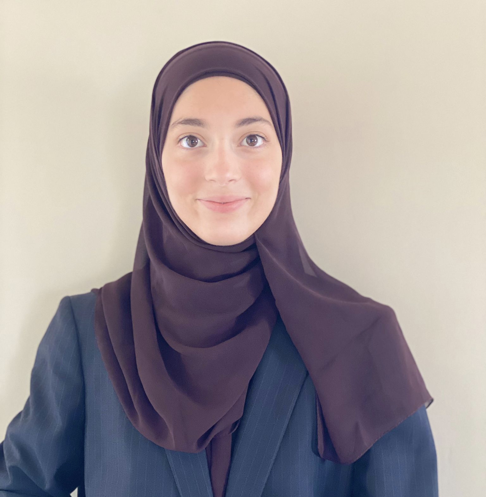

Welcome to Hind Suleiman Hussein's Web Page
This is my main page for the COMP334 course work
Short Biography

I am a 3rd year Computer Science student at
Birzeit University, Palestine.
My Student ID is 1202416.
Education
- [Sep-2020 - present] Pursue a BSC Degree in Computer Science from
Birzeit University, Palestine.
- [Sep-2019-May-2020] Graduated and Recieved a High School Diploma from
Al-Najah Secondary School.
Training
I have completed various training programs
in Speaking and Debating, such as:
- Debating in the
MUN
- Presenting and Speaking during
Breast Cancer and Diabetes Awareness.
Employment or Internship
I did an intern at:
- MicroLearn as a UX/UI designer
for 3 months. My responsibilities were
designing websites to look easier and enhance
user experience.
Community and Voluntary Works
I volunteered at the following places:
- Birzeit University's English Department for a couple of days.
My role was to organize papers and help with paper work.
I have also particpated in various Community sevice activities,
some of these activities:
- Astrophysics and Astronomy Club for 5 months.
My role was to be a planner in the planning committee.
Awards and Distinctions
I particiated in various intellectual and physical activities:
- I have participated in the fastest typer 2022, and did not place.
- I participated in a debate compeition, and my team won the majority vote.
- I participated in the Github Streak Compeition, and had a 6 day streak
My Time Table
Study Time Table for 2nd Semester 2022/2023
|
9:55-11:00 |
11:10-12:15 |
12:25-1:30 |
Saturday |
|
COMP332 |
COMP438 |
| Monday |
|
COMP332 |
COMP438 |
| Tuesday |
COMP334 |
COMP336 |
COMP433 |
| Thursday |
COMP334 |
COMP336 |
COMP433 |
Course Work Navigation